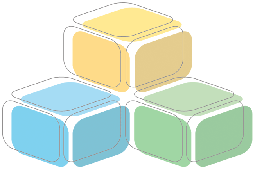

Project Members
Department of Social Informatics,
Kyoto University
Ishida Laboratory
ISHIDA Toru
NAKANISHI Hideyuki
Kambayashi Laboratory
KAMBAYASHI Yahiko
YOKOTA Yusuke
Biosphere Informatics
SAKAI Tetsuro
MORIYA Kazuyuki
YOSHIMURA Tetsuhiko
Minoh Laboratory
KAKUSHO Koh
Victor V. Kryssanov
（JST）
OKABE Masayuki
（JST）
Katai Laboratory
KATAI Osamu
Department of Adaptive Machine Systems, Osaka University
ISHIGURO Hiroshi
NTT Communication Science Laboratories
AKAHANI Junichi
SUGIYAMA Akira
Japan Science and Technology Corporation (JST)
Digital City Research Center
KOIZUMI Satoshi
(JST)
KODA Tomoko
(JST)
NAKANISHI Hideyuki (Kyoto University)
ITO Hideaki
(Kyoto University)
ABE Mitsutoshi
(Kyoto University)
YASUKAWA Naoki
(Kyoto University)
DAI Guiming
(Wakayama University)
TORII Daisuke
(Kyoto University)
SHIMIZU Nobuya
(Kyoto University)
KAWASOE Tomoyuki
(Kyoto University)
CHIN Rai
(Kyoto University)
Osaki Tomohiro
(Kyoto University)
YAMAMOTO Akishige
(Mathematical Systems Inc.)
TODA Shoko
(JST)
KOSUGI Terumi
(JST)
Nakazawa Satoshi
(Kyoto University)